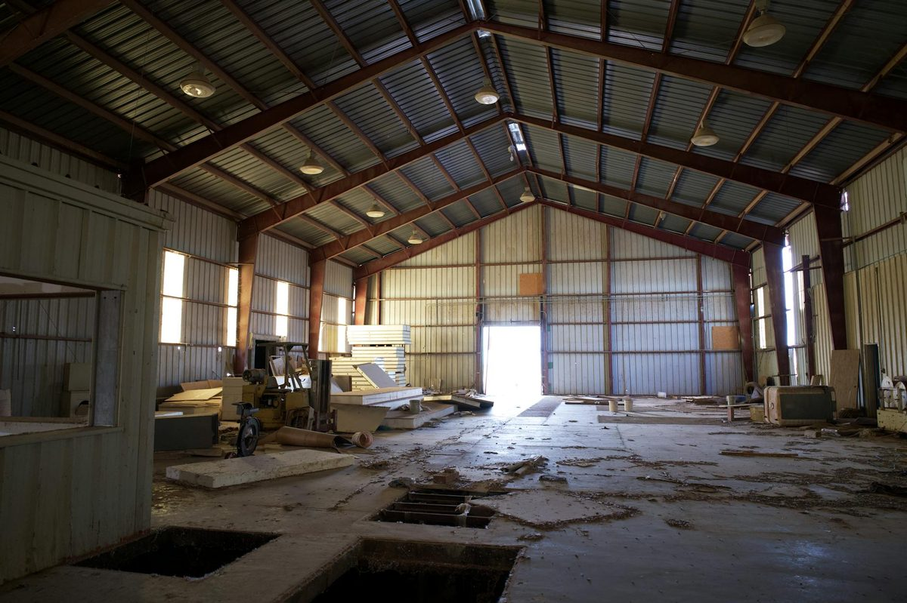

Metal building spray foam insulation applies closed cell polyurethane foam directly to the inside of steel panels, eliminating condensation and stabilizing temperatures in Knoxville workshops, warehouses and garages. Typical installed cost in Knoxville runs $1.50 to $5.00 per square foot for residential closed cell work, and $2.50 to $6.00 per square foot for steel buildings depending on access. The process is a free on-site assessment, a written quote, surface prep and spraying in controlled lifts, then a 24-hour cure. See the Knoxville pricing guide for a full breakdown.
A steel building in East Tennessee will rain on you from the inside. When warm humid Knoxville air hits a cold steel roof panel, condensation forms, droplets fall onto tools, equipment, and finished work below. Closed cell spray foam sprayed directly to the inside of the steel skin eliminates condensation at the source - no vapor barrier needed, no fiberglass to fall down, no rust streaks across your shop floor. We handle steel buildings, workshops, warehouses, garages, and barndominiums across Knox, Blount, Anderson, and Sevier County.

Fiberglass blankets - the typical steel building insulation - have three failure modes in East Tennessee. The vinyl facer eventually tears, the fiberglass sags between the purlins, and the white facing turns black with mold from condensation that gets behind it. Closed cell spray foam fixes the root cause: it bonds directly to the steel panel, eliminating the dew-point surface inside the building. Once the steel skin is sealed at 2 inches of closed cell, condensation cannot form, mold cannot grow, and the building maintains a stable interior temperature year-round.
For unconditioned Knoxville workshops and storage buildings, even 1 inch of closed cell stops the condensation drip and adds R-7 of thermal resistance. For conditioned shops, residential garages, and barndominiums, 3 inches of closed cell on the roof and 2 inches on the walls delivers R-21 / R-14 and supports comfortable heating and cooling.
Knoxville metal building spray foam runs $2.50 to $6.00 per square foot of surface area in 2026. For a typical 30x40 (1,200 sq ft floor, roughly 2,800 sq ft total spray area) Knoxville shop, expect $7,000 to $14,000 for 2 inches of closed cell on roof and walls. Condensation-control jobs at 1 inch run roughly half that.
| Building Size | Condensation Control (1") | Full Insulation (2-3") |
|---|---|---|
| 24x30 garage / shop | $3,500 - $5,500 | $6,500 - $11,500 |
| 30x40 workshop | $5,500 - $8,000 | $9,500 - $16,000 |
| 40x60 commercial bay | $9,000 - $14,000 | $16,000 - $26,000 |
| 50x80 warehouse | $15,000 - $22,000 | $26,000 - $42,000 |
| Existing fiberglass removal | Add $0.50 - $1.50 per sq ft | |
Commercial Knoxville buildings may qualify for the Section 179D deduction on the federal tax return. TVA EnergyRight commercial incentives also apply to many Knoxville business owners insulating steel buildings.
Open cell spray foam should never be installed against bare steel in Knoxville. Open cell is vapor-permeable, so humidity passes through the foam and condenses on the steel anyway - then has nowhere to go. The result is wet foam, rusted steel, and mold. Closed cell at 2 inches creates an integrated vapor barrier and air barrier in one product. See our closed cell spray foam page for the product spec.
Knoxville sees roughly 50 inches of rain per year and summer dew points routinely in the low 70s. That combination makes condensation the number one issue in Knoxville steel buildings - more so than R-value. Many ag and contractor shops in Karns, Powell, Halls, Corryton, and out toward Maryville were built with no insulation or with bubble-wrap radiant barrier that does not stop condensation. Spray foam is the only retrofit that solves the problem in one application. We also handle pole barn and barndominium projects under our pole barn page. Knoxville-Knox County does not require permits for spray foam in unconditioned ag buildings, but conditioned space conversions (turning a shop into a barndo) may - we will tell you in writing.
Call (865) 564-7823 - Mon-Sat 7AM-7PM. Free quotes available.